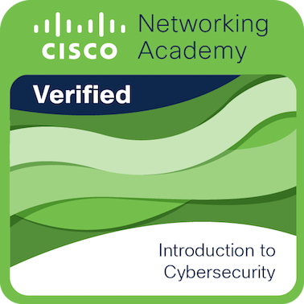
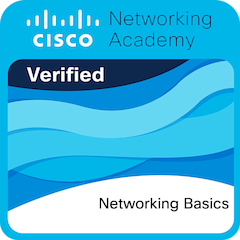
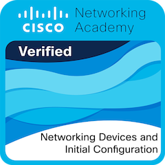
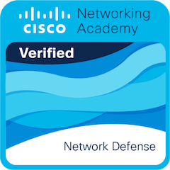
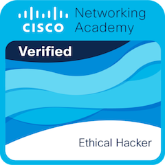

Excelente punto de partida sin prerrequisitos. Explica el panorama global del cibercrimen, malware y phishing. Ideal para tomar conciencia sobre la higiene digital y entender por que la seguridad es la maxima prioridad en el mundo empresarial. Considero que es el fundamento basico de este curso.

Escencial para entender como viajan los datos. Cubre modelos OSI y TCP/IP, direccionamiento IP y protocolos clave. No se puede proteger lo que no se sabe como funciona. Este curso nos da las bases tecnicas reales necesarias siempre. Menciona una de las capas mas importantes para la seguridad.

Modulo totalmente practico. En este aprendi como son las conexiones e implementaciones de la primera capa de seguridad en routers y switches, haciendo uso de la linea de comando de Cisco. El uso de packet tracer para simular escenarios reales fue uno de los highlights de este curso.

Este curso se enfoca en blindar computadoras, servidores y dispositivos moviles. Cubre Linux, Windows, criptografia basica y firewalls. Es sumamente util para aprender a mitigar vulnerabilidades directamente desde el sistema operativo del usuario.
Lleva la seguridad al nivel macro. Este curso enseña como operan los Centros de Operaciones de Seguridad (SOC), las diferentes politicas de gobernanza de datos y la gestion de incidentes. Es perfecto para entender como una empresa entera detecta, frena y reposta ataques.

Consolida el contenido de los modulos previos, orientandolos al ambito laboral. Considero que este modulo ayuda a desarrollar las habilidades de monitoreo y analisis de trafico (un ejemplo el uso de herrmaientas como Wireshark). Nos prepara con un perfil tecnico solido y listo para nuestra iprimera oportunidad real en un equipo de SOC.
Es uno de los primeros cursos que empezamos, pero uno de los mas relevantes para el curso. Nos enseña metodologias de pruebas de penetracion (pentesting), escaneo de redes y explotacion de vulnerabilidades autorizada para parchar las fallas de infraestructura antes de que sea tarde.
